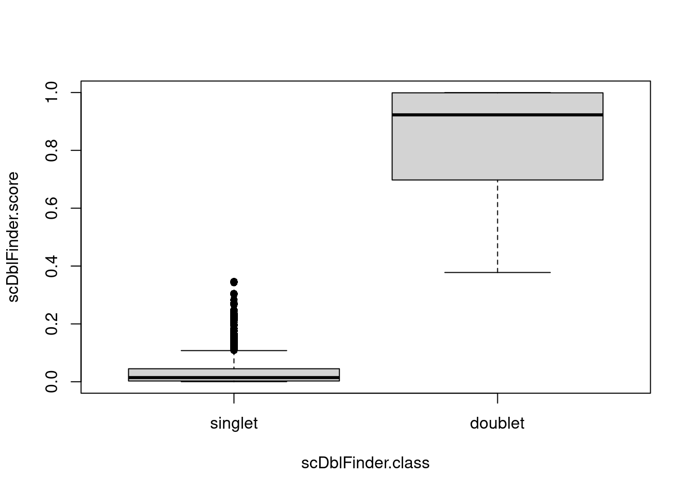

Doublet prediction using {scDblFinder}
2025-03-05
Last updated: 2025-03-05
Checks: 7 0
Knit directory: muse/
This reproducible R Markdown analysis was created with workflowr (version 1.7.1). The Checks tab describes the reproducibility checks that were applied when the results were created. The Past versions tab lists the development history.
Great! Since the R Markdown file has been committed to the Git repository, you know the exact version of the code that produced these results.
Great job! The global environment was empty. Objects defined in the global environment can affect the analysis in your R Markdown file in unknown ways. For reproduciblity it’s best to always run the code in an empty environment.
The command set.seed(20200712) was run prior to running
the code in the R Markdown file. Setting a seed ensures that any results
that rely on randomness, e.g. subsampling or permutations, are
reproducible.
Great job! Recording the operating system, R version, and package versions is critical for reproducibility.
Nice! There were no cached chunks for this analysis, so you can be confident that you successfully produced the results during this run.
Great job! Using relative paths to the files within your workflowr project makes it easier to run your code on other machines.
Great! You are using Git for version control. Tracking code development and connecting the code version to the results is critical for reproducibility.
The results in this page were generated with repository version cc8428f. See the Past versions tab to see a history of the changes made to the R Markdown and HTML files.
Note that you need to be careful to ensure that all relevant files for
the analysis have been committed to Git prior to generating the results
(you can use wflow_publish or
wflow_git_commit). workflowr only checks the R Markdown
file, but you know if there are other scripts or data files that it
depends on. Below is the status of the Git repository when the results
were generated:
Ignored files:
Ignored: .Rproj.user/
Ignored: data/1M_neurons_filtered_gene_bc_matrices_h5.h5
Ignored: data/293t/
Ignored: data/293t_3t3_filtered_gene_bc_matrices.tar.gz
Ignored: data/293t_filtered_gene_bc_matrices.tar.gz
Ignored: data/5k_Human_Donor1_PBMC_3p_gem-x_5k_Human_Donor1_PBMC_3p_gem-x_count_sample_filtered_feature_bc_matrix.h5
Ignored: data/5k_Human_Donor2_PBMC_3p_gem-x_5k_Human_Donor2_PBMC_3p_gem-x_count_sample_filtered_feature_bc_matrix.h5
Ignored: data/5k_Human_Donor3_PBMC_3p_gem-x_5k_Human_Donor3_PBMC_3p_gem-x_count_sample_filtered_feature_bc_matrix.h5
Ignored: data/5k_Human_Donor4_PBMC_3p_gem-x_5k_Human_Donor4_PBMC_3p_gem-x_count_sample_filtered_feature_bc_matrix.h5
Ignored: data/Parent_SC3v3_Human_Glioblastoma_filtered_feature_bc_matrix.tar.gz
Ignored: data/brain_counts/
Ignored: data/cl.obo
Ignored: data/cl.owl
Ignored: data/jurkat/
Ignored: data/jurkat:293t_50:50_filtered_gene_bc_matrices.tar.gz
Ignored: data/jurkat_293t/
Ignored: data/jurkat_filtered_gene_bc_matrices.tar.gz
Ignored: data/pbmc20k/
Ignored: data/pbmc20k_seurat/
Ignored: data/pbmc3k/
Ignored: data/pbmc4k_filtered_gene_bc_matrices.tar.gz
Ignored: data/refdata-gex-GRCh38-2020-A.tar.gz
Ignored: data/seurat_1m_neuron.rds
Ignored: data/t_3k_filtered_gene_bc_matrices.tar.gz
Ignored: r_packages_4.4.1/
Untracked files:
Untracked: Nothobranchius_furzeri.Nfu_20140520.113.gtf.gz
Untracked: analysis/bioc_scrnaseq.Rmd
Untracked: data/pbmc_1k_v3_filtered_feature_bc_matrix.h5
Untracked: data/pbmc_1k_v3_raw_feature_bc_matrix.h5
Note that any generated files, e.g. HTML, png, CSS, etc., are not included in this status report because it is ok for generated content to have uncommitted changes.
These are the previous versions of the repository in which changes were
made to the R Markdown (analysis/scdblfinder.Rmd) and HTML
(docs/scdblfinder.html) files. If you’ve configured a
remote Git repository (see ?wflow_git_remote), click on the
hyperlinks in the table below to view the files as they were in that
past version.
| File | Version | Author | Date | Message |
|---|---|---|---|---|
| Rmd | cc8428f | Dave Tang | 2025-03-05 | Combined batch run versus isolated run |
| html | e6e3268 | Dave Tang | 2025-03-05 | Build site. |
| Rmd | 0f01531 | Dave Tang | 2025-03-05 | Predicting doublets using scDblFinder |
The scDblFinder package gathers various methods for the detection and handling of doublets/multiplets in single-cell sequencing data (i.e. multiple cells captured within the same droplet or reaction volume). It includes methods formerly found in the scran package, the new fast and comprehensive scDblFinder method, and a reimplementation of the Amulet detection method for single-cell ATAC-seq.
Dependencies
Install Bioconductor packages using
BiocManager::install().
if (!require("BiocManager", quietly = TRUE))
install.packages("BiocManager")
BiocManager::install("scDblFinder")
BiocManager::install("TENxIO")Load libraries.
suppressPackageStartupMessages(library(scDblFinder))
suppressPackageStartupMessages(library(SingleCellExperiment))
suppressPackageStartupMessages(library(TENxIO))Data
Download data.
outdir <- 'data/'
filtered_h5_url <- 'https://cf.10xgenomics.com/samples/cell-exp/3.0.0/pbmc_1k_v3/pbmc_1k_v3_filtered_feature_bc_matrix.h5'
filtered_h5 <- paste0(outdir, basename(filtered_h5_url))
pbmc5k_1_url <- "https://cf.10xgenomics.com/samples/cell-exp/9.0.0/5k_Human_Donor1_PBMC_3p_gem-x_5k_Human_Donor1_PBMC_3p_gem-x/5k_Human_Donor1_PBMC_3p_gem-x_5k_Human_Donor1_PBMC_3p_gem-x_count_sample_filtered_feature_bc_matrix.h5"
pbmc5k_2_url <- "https://cf.10xgenomics.com/samples/cell-exp/9.0.0/5k_Human_Donor2_PBMC_3p_gem-x_5k_Human_Donor2_PBMC_3p_gem-x/5k_Human_Donor2_PBMC_3p_gem-x_5k_Human_Donor2_PBMC_3p_gem-x_count_sample_filtered_feature_bc_matrix.h5"
pbmc5k_1_h5 <- paste0(outdir, basename(pbmc5k_1_url))
pbmc5k_2_h5 <- paste0(outdir, basename(pbmc5k_2_url))
download_file <- function(url, outfile){
fn <- basename(url)
if(file.exists(outfile) == FALSE){
download.file(url, destfile = outfile)
} else {
message(paste0(outfile, " already exists"))
}
}
download_file(filtered_h5_url, filtered_h5)data/pbmc_1k_v3_filtered_feature_bc_matrix.h5 already existsdownload_file(pbmc5k_1_url, pbmc5k_1_h5)data/5k_Human_Donor1_PBMC_3p_gem-x_5k_Human_Donor1_PBMC_3p_gem-x_count_sample_filtered_feature_bc_matrix.h5 already existsdownload_file(pbmc5k_2_url, pbmc5k_2_h5)data/5k_Human_Donor2_PBMC_3p_gem-x_5k_Human_Donor2_PBMC_3p_gem-x_count_sample_filtered_feature_bc_matrix.h5 already existsCreate objects
Create SingleCellExperiment files.
create_sce_obj <- function(h5){
con <- TENxH5(h5)
import(con)
}
pbmc1k <- create_sce_obj(filtered_h5)Warning in rhdf5::h5read(file, name = paste0(group, ranges), index = list(1L),
: Object 'matrix/features/interval' does not exist in this HDF5 file.pbmc1kclass: SingleCellExperiment
dim: 33538 1222
metadata(1): TENxFile
assays(1): counts
rownames(33538): ENSG00000243485 ENSG00000237613 ... ENSG00000277475
ENSG00000268674
rowData names(3): ID Symbol Type
colnames(1222): AAACCCAAGGAGAGTA-1 AAACGCTTCAGCCCAG-1 ...
TTTGGTTGTAGAATAC-1 TTTGTTGCAATTAGGA-1
colData names(0):
reducedDimNames(0):
mainExpName: Gene Expression
altExpNames(0):Predict doublets
Run scDblFinder().
pbmc1k.pred <- scDblFinder(pbmc1k)Creating ~1500 artificial doublets...Dimensional reductionEvaluating kNN...Training model...iter=0, 155 cells excluded from training.iter=1, 142 cells excluded from training.iter=2, 135 cells excluded from training.Threshold found:0.29426 (2.1%) doublets calledcolData(pbmc1k.pred) |>
as.data.frame() -> pbmc1k.pred
head(pbmc1k.pred) scDblFinder.class scDblFinder.score scDblFinder.weighted
AAACCCAAGGAGAGTA-1 singlet 0.0169715248 0.40543264
AAACGCTTCAGCCCAG-1 singlet 0.0008992357 0.29487536
AAAGAACAGACGACTG-1 singlet 0.0003129665 0.21450453
AAAGAACCAATGGCAG-1 singlet 0.0005328555 0.22582183
AAAGAACGTCTGCAAT-1 singlet 0.0127416188 0.37730614
AAAGGATAGTAGACAT-1 singlet 0.0020924010 0.07760762
scDblFinder.cxds_score
AAACCCAAGGAGAGTA-1 0.006469792
AAACGCTTCAGCCCAG-1 0.049250538
AAAGAACAGACGACTG-1 0.074387442
AAAGAACCAATGGCAG-1 0.050214668
AAAGAACGTCTGCAAT-1 0.103131556
AAAGGATAGTAGACAT-1 0.075818423Plot scores per label.
boxplot(scDblFinder.score ~ scDblFinder.class, data = pbmc1k.pred, pch = 16)
| Version | Author | Date |
|---|---|---|
| e6e3268 | Dave Tang | 2025-03-05 |
Data subset
Since doublets are artifically generated using the available data, providing a different input should affect the scoring and prediction.
set.seed(1984)
n <- ceiling(ncol(pbmc1k)*0.9)
bcs <- sample(x = colnames(pbmc1k), size = n)
pbmc1k_subset <- pbmc1k[, bcs]
pbmc1k_subsetclass: SingleCellExperiment
dim: 33538 1100
metadata(1): TENxFile
assays(1): counts
rownames(33538): ENSG00000243485 ENSG00000237613 ... ENSG00000277475
ENSG00000268674
rowData names(3): ID Symbol Type
colnames(1100): AGGACGAAGACCTTTG-1 TTTATGCGTTGATCGT-1 ...
GTCACTCTCTTGAACG-1 TTCAGGAGTCTACAAC-1
colData names(0):
reducedDimNames(0):
mainExpName: Gene Expression
altExpNames(0):Predict doublets on the data subset.
pbmc1k_subset.pred <- scDblFinder(pbmc1k_subset)Creating ~1500 artificial doublets...Dimensional reductionEvaluating kNN...Training model...iter=0, 136 cells excluded from training.iter=1, 120 cells excluded from training.iter=2, 118 cells excluded from training.Threshold found:0.4633 (3%) doublets calledcolData(pbmc1k_subset.pred) |>
as.data.frame() -> pbmc1k_subset.pred
idx <- match(
row.names(pbmc1k_subset.pred),
row.names(pbmc1k.pred)
)
x <- pbmc1k.pred[idx, ]$scDblFinder.score
y <- pbmc1k_subset.pred$scDblFinder.score
plot(x, y, pch = 16, xlab = 'Full dataset', ylab = 'Subset')
| Version | Author | Date |
|---|---|---|
| e6e3268 | Dave Tang | 2025-03-05 |
Running in batches
Create single SingleCellExperiment object.
pbmc5k_1 <- create_sce_obj(pbmc5k_1_h5)Warning in rhdf5::h5read(file, name = paste0(group, ranges), index = list(1L),
: Object 'matrix/features/interval' does not exist in this HDF5 file.pbmc5k_2 <- create_sce_obj(pbmc5k_2_h5)Warning in rhdf5::h5read(file, name = paste0(group, ranges), index = list(1L),
: Object 'matrix/features/interval' does not exist in this HDF5 file.colnames(pbmc5k_1) <- paste0(colnames(pbmc5k_1), "_1")
colnames(pbmc5k_2) <- paste0(colnames(pbmc5k_2), "_2")
if(any(colnames(pbmc5k_1) %in% colnames(pbmc5k_2)) == TRUE){
stop("Cell barcodes are not unique")
}
cbind(
pbmc5k_1,
pbmc5k_2
) -> pbmc5k
coldata <- DataFrame(
donor = paste0('donor', sub(pattern = ".*_", replacement = "", x = colnames(pbmc5k)))
)
row.names(coldata) <- colnames(pbmc5k)
colData(pbmc5k) <- coldata
pbmc5kclass: SingleCellExperiment
dim: 38606 11699
metadata(2): TENxFile TENxFile
assays(1): counts
rownames(38606): ENSG00000290825 ENSG00000243485 ... ENSG00000278817
ENSG00000277196
rowData names(3): ID Symbol Type
colnames(11699): AAACCAAAGGTGACGA-1_1 AAACCCTGTGACGAGT-1_1 ...
TGTGTTAGTTAAGTGG-1_2 TGTGTTGAGCCAATGC-1_2
colData names(1): donor
reducedDimNames(0):
mainExpName: Gene Expression
altExpNames(0):Predict on combined object but on different samples.
A vector of the same length as cells (or the name of a column of colData(x)), indicating to which sample each cell belongs. Here, a sample is understood as being processed independently. If omitted, doublets will be searched for with all cells together. If given, doublets will be searched for independently for each sample, which is preferable if they represent different captures. If your samples were multiplexed using cell hashes, what you want to give here are the different batches/wells (i.e. independent captures, since doublets cannot arise across them) rather than biological samples.
pbmc5k.pred <- scDblFinder(pbmc5k, samples="donor") | | | 0% | |=================================== | 50% | |======================================================================| 100%Predict on single batch.
pbmc5k_1.pred <- scDblFinder(pbmc5k_1)Creating ~4568 artificial doublets...Dimensional reductionEvaluating kNN...Training model...iter=0, 405 cells excluded from training.iter=1, 397 cells excluded from training.iter=2, 384 cells excluded from training.Threshold found:0.381223 (3.9%) doublets calledCompare results.
idx <- match(colnames(pbmc5k_1.pred), colnames(pbmc5k.pred))
x <- pbmc5k.pred[, idx]$scDblFinder.score
y <- pbmc5k_1.pred$scDblFinder.score
plot(x, y, pch = 16, xlab = "Combined but using batch", ylab = "Independent batch")
Numbers.
table(pbmc5k.pred[, idx]$scDblFinder.class)
singlet doublet
5453 257 table(pbmc5k_1.pred$scDblFinder.class)
singlet doublet
5487 223
sessionInfo()R version 4.4.1 (2024-06-14)
Platform: x86_64-pc-linux-gnu
Running under: Ubuntu 22.04.5 LTS
Matrix products: default
BLAS: /usr/lib/x86_64-linux-gnu/openblas-pthread/libblas.so.3
LAPACK: /usr/lib/x86_64-linux-gnu/openblas-pthread/libopenblasp-r0.3.20.so; LAPACK version 3.10.0
locale:
[1] LC_CTYPE=en_US.UTF-8 LC_NUMERIC=C
[3] LC_TIME=en_US.UTF-8 LC_COLLATE=en_US.UTF-8
[5] LC_MONETARY=en_US.UTF-8 LC_MESSAGES=en_US.UTF-8
[7] LC_PAPER=en_US.UTF-8 LC_NAME=C
[9] LC_ADDRESS=C LC_TELEPHONE=C
[11] LC_MEASUREMENT=en_US.UTF-8 LC_IDENTIFICATION=C
time zone: Etc/UTC
tzcode source: system (glibc)
attached base packages:
[1] stats4 stats graphics grDevices utils datasets methods
[8] base
other attached packages:
[1] TENxIO_1.8.2 scDblFinder_1.20.2
[3] SingleCellExperiment_1.28.1 SummarizedExperiment_1.36.0
[5] Biobase_2.66.0 GenomicRanges_1.58.0
[7] GenomeInfoDb_1.42.3 IRanges_2.40.1
[9] S4Vectors_0.44.0 BiocGenerics_0.52.0
[11] MatrixGenerics_1.18.1 matrixStats_1.4.1
[13] workflowr_1.7.1
loaded via a namespace (and not attached):
[1] rstudioapi_0.17.1 jsonlite_1.8.9 magrittr_2.0.3
[4] ggbeeswarm_0.7.2 rmarkdown_2.28 fs_1.6.4
[7] BiocIO_1.16.0 zlibbioc_1.52.0 vctrs_0.6.5
[10] Rsamtools_2.22.0 RCurl_1.98-1.16 htmltools_0.5.8.1
[13] S4Arrays_1.6.0 BiocBaseUtils_1.8.0 curl_5.2.3
[16] BiocNeighbors_2.0.1 Rhdf5lib_1.28.0 xgboost_1.7.8.1
[19] SparseArray_1.6.1 rhdf5_2.50.2 sass_0.4.9
[22] bslib_0.8.0 cachem_1.1.0 GenomicAlignments_1.42.0
[25] whisker_0.4.1 igraph_2.1.1 lifecycle_1.0.4
[28] pkgconfig_2.0.3 rsvd_1.0.5 Matrix_1.7-0
[31] R6_2.5.1 fastmap_1.2.0 GenomeInfoDbData_1.2.13
[34] digest_0.6.37 colorspace_2.1-1 ps_1.8.1
[37] rprojroot_2.0.4 scater_1.34.0 dqrng_0.4.1
[40] irlba_2.3.5.1 beachmat_2.22.0 fansi_1.0.6
[43] httr_1.4.7 abind_1.4-8 compiler_4.4.1
[46] BiocParallel_1.40.0 viridis_0.6.5 highr_0.11
[49] HDF5Array_1.34.0 R.utils_2.12.3 MASS_7.3-60.2
[52] DelayedArray_0.32.0 rjson_0.2.23 bluster_1.16.0
[55] tools_4.4.1 vipor_0.4.7 beeswarm_0.4.0
[58] httpuv_1.6.15 R.oo_1.26.0 glue_1.8.0
[61] restfulr_0.0.15 callr_3.7.6 rhdf5filters_1.18.0
[64] promises_1.3.0 grid_4.4.1 getPass_0.2-4
[67] cluster_2.1.6 generics_0.1.3 gtable_0.3.6
[70] tzdb_0.4.0 R.methodsS3_1.8.2 data.table_1.16.2
[73] hms_1.1.3 BiocSingular_1.22.0 ScaledMatrix_1.14.0
[76] metapod_1.14.0 utf8_1.2.4 XVector_0.46.0
[79] ggrepel_0.9.6 pillar_1.9.0 stringr_1.5.1
[82] limma_3.62.2 later_1.3.2 dplyr_1.1.4
[85] lattice_0.22-6 rtracklayer_1.66.0 tidyselect_1.2.1
[88] locfit_1.5-9.10 Biostrings_2.74.1 scuttle_1.16.0
[91] knitr_1.48 git2r_0.35.0 gridExtra_2.3
[94] edgeR_4.4.2 xfun_0.48 statmod_1.5.0
[97] stringi_1.8.4 UCSC.utils_1.2.0 yaml_2.3.10
[100] evaluate_1.0.1 codetools_0.2-20 tibble_3.2.1
[103] cli_3.6.3 munsell_0.5.1 processx_3.8.4
[106] jquerylib_0.1.4 Rcpp_1.0.13 XML_3.99-0.17
[109] parallel_4.4.1 ggplot2_3.5.1 readr_2.1.5
[112] scran_1.34.0 bitops_1.0-9 viridisLite_0.4.2
[115] scales_1.3.0 crayon_1.5.3 rlang_1.1.4